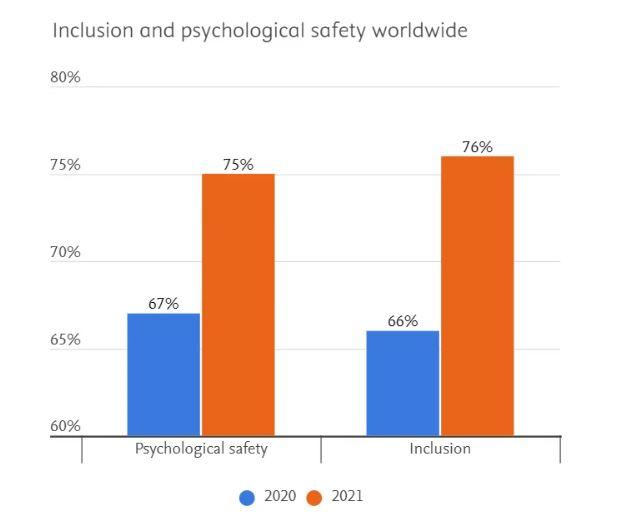
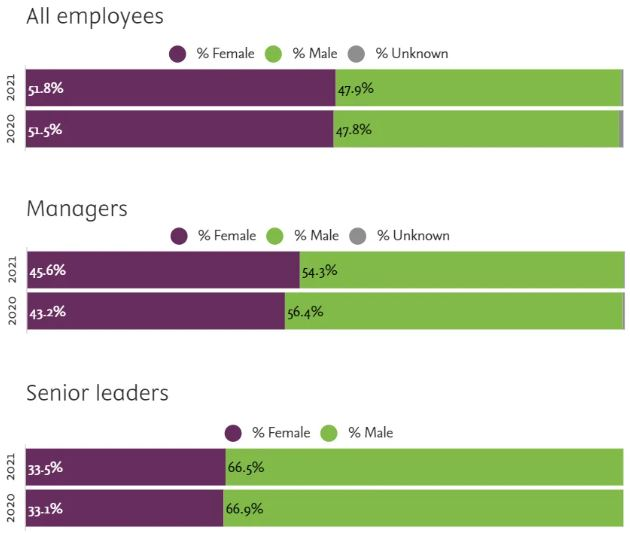
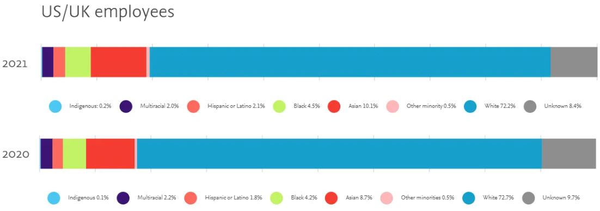
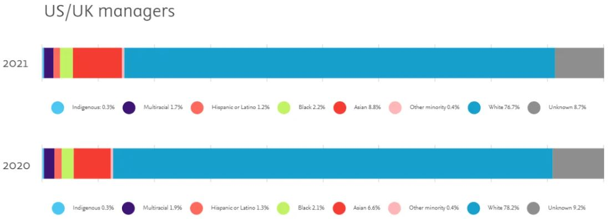
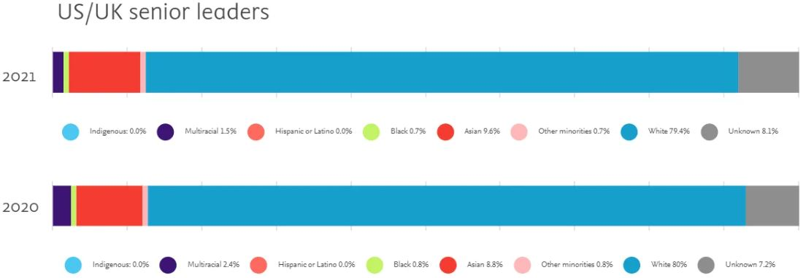

Studies also show that workforce diversity improves business performance. We know that improving
diversity is not an easy task that can be accomplished overnight. Having a vibrant, diverse workplace
that reflects the communities in which we live and operate requires commitment, persistence, and the
effort of every Elsevier colleague to continually improve our workplace and practices. We all must do our
part to tackle systemic inequities, and we are taking action as an organization to drive a multi-year
journey toward greater inclusion, diversity and equity.
So it is with trust that we share our progress so far, our strong belief that great ideas come from
everywhere, and the sincere hope that we can inspire our colleagues and the communities we serve to help
us find even more ways to accelerate our journey to become a more inclusive and diverse workforce.
Inclusion and psychological safety
We believe a psychologically safe and inclusive environment is fundamental to cultivating a vibrant,
diverse workforce where colleagues can thrive. All employees should feel safe to speak up with their
ideas, questions, concerns or mistakes and believe that differences are respected. This means creating an
environment where colleagues know they will not be punished or humiliated for speaking up with ideas,
questions, concerns or mistakes — and one where employees feel valued and can bring their whole selves to
work.
Intentionally developing a psychologically safe and inclusive workplace has been a cornerstone of our
inclusion and diversity (I&D) efforts. In 2021 alone, thanks to the efforts of more than 70 trained
facilitators, we conducted hundreds of workshops and trainings on psychological safety, inclusive
behavior and unconscious bias to help our people managers and teams improve their ability to foster open
and inclusive working environments.
Our employee survey data indicates that we are making good progress in our journey to ensure all
employees feel included and safe to speak up. To continue our progress, we will build on this foundation
by strengthening and expanding participation in these current programs.

Gender equity
We are also committed to gender diversity and equity in our organization.
As we look across our total workforce in the first chart, we see that we have attained good gender
balance, with 51.8% female and 47.9% male. Having a gender-balanced workforce is an important part of our
overall journey to having a diverse workforce.
We see continued room for improvement when it comes to gender representation at manager and senior
leadership levels. 45.6% of our managers are female and 54.4% male, with steady progress over the years.
We have more work to do at the senior leadership level, with 33.5% female and 66.5% male.
To improve gender representation across all levels of the organization, we are focusing on strengthening
the internal talent pipeline. Since 2019, we have held an annual Developing Talent for Gender Equity
program — a 9-month program designed to proactively increase gender balance in senior leadership roles by
ensuring that individuals who wish to develop into senior leaders can gain the education and exposure to
enable them to realize their ambitions. Program alumni form a community of peers, mentors, sponsors and
role models to share leadership experiences and provide support.
We also offer a formal 6-month RELX NetWorx Mentorship to support the growth and development
of all
employees with a track focused on women in leadership. The program has been offered since 2019 and
recognizes that effective growth and development can often be gained through 1:1 interaction with others
across RELX, our parent company. Hundreds of employees have participated in the program, with over 70% of
mentor-mentee connections involving people from different business divisions and geographies.
Understanding that our current data reflects sexual identity, not gender identity, we will also be
working with RELX, our parent company, to collect more relevant gender identity information with the
consent of our colleagues.

Race & ethnicity
Another critical dimension we are actively working to address is racial and ethnic diversity. Currently,
we are only able to report on the racial and ethnic diversity of our US- and UK-based colleagues; we have
decided to share this data now rather than wait until global data are available.
This chart shows the racial and ethnic diversity of our US- and UK-based employees over the last two
years.
Overall, 19.4% of all employees across the two countries represent a racial or ethnic minority.
This has improved from 17.6% in 2020 and represents good year-on-year progress. However, we know we have
a lot more progress to make as specific racial/ethnic minorities are underrepresented relative to their
populations.
When we focus on racially and ethnically diversity among managers and senior leaders, we see an even more
pronounced need to improve our minority representation, with 14.5% and 12.5% respectively. This
represents limited progress from the previous year, and we know this is not good enough.
To help improve our representation, we have focused on making our recruitment process more inclusive. We
developed inclusive training and guides for hiring managers and implemented a tool that ensures our job
postings are written to be inclusive and attract a wide and diverse pool of candidates.
We also launched our first Rising TIDE internship program in 2021. This paid internship program gave nine
US college students from racially and socioeconomically diverse backgrounds the opportunity to spend the
summer working at Elsevier. We were able to extend six offers for full-time employment from this talented
cohort, of which three interns have accepted their offers. In 2022, we are expanding this program to the
UK. We found this pilot program to be a wonderful experience for all who participated — interns and
Elsevier colleagues alike.
In the coming year, we will continue to focus on our talent acquisition process and how we develop our
internal pipeline of diverse talent. Having seen the benefit of the Gender Equity talent development
programs, we will be rolling out a formal talent development program for Minority Equity this year. In
addition, we will explore ways to improve our workforce diversity data from a race and ethnicity
perspective and across our other dimensions.



To help improve our representation, we have focused on making our recruitment process more inclusive. We
developed inclusive training and guides for hiring managers and implemented a tool that ensures our job
postings are written to be inclusive and attract a wide and diverse pool of candidates.
We also launched our first Rising TIDE internship program in 2021. This paid internship
program gave nine US college students from racially and socioeconomically diverse backgrounds the
opportunity to spend the summer working at Elsevier. We were able to extend six offers for full-time
employment from this talented cohort, of which three interns have accepted their offers. In 2022, we are
expanding this program to the UK. We found this pilot program to be a wonderful experience for all who
participated — interns and Elsevier colleagues alike.
In the coming year, we will continue to focus on our talent acquisition process and how we develop our
internal pipeline of diverse talent. Having seen the benefit of the Gender Equity talent development
programs, we will be rolling out a formal talent development program for Minority Equity this year. In
addition, we will explore ways to improve our workforce diversity data from a race and ethnicity
perspective and across our other dimensions.